Se desea modelar la variabilidad total de una variable respuesta de interés, en función de relaciones lineales con dos o más variables predictoras, cuantitativas y cualitatiivas, formuladas simultáneamente en un único modelo.
Las variables predictoras pueden ser:
Cuantitativas, caso en el cual se supone se miden sin error (o el error es despreciable).
Cualitativas o categóricas, en este caso su manejo en el modelo se realiza a través de la definición de variables indicadoras, las cuales toman valores de 0 ó 1.
Suponemos en principio que las variables predictoras guardan poca asociación lineal entre sí, es decir, cada variable predictora aporta información independiente de las demás predictoras presentes en el modelo (hasta cierto grado, la información aportada por cada una no es redundante). La ecuación del modelo de regresión en este caso es:
\[\Large y_i=\beta_0+\beta_1x_{i1}+\beta_2x_{i2}+...+\beta_kx_{ik}\varepsilon_i\]
Cuando los efectos de una variable predictora depende de los niveles de otras variables predictoras incluidas en el modelo.
Por ejemplo, suponga un modelo de regresión con las variables predictoras\(X_1\) y \(X_2\), que incluye tanto los efectos principales como el de interacción de estas dos variables. Este modelo corresponde a:
\[\large Y_i=\beta_0+\beta_1 X_{i1}+\beta_2 X_{i2}+\beta_3X_{1}X_2+\varepsilon_i\]
El término de interacción es representado por \(\beta_3X_{1}X_2\). Para expresar el anterior modelo en términos del modelo lineal general, definimos simplemente \(X_3=X_{1}X_2\) y rescribimos el modelo como:
\[\large Y_i=\beta_0+\beta_1 X_{i1}+\beta_2 X_{i2}+\beta_3X_{3}+\varepsilon_i\]
Suponga que en un modelo de regresión para el gasto mensual por familia en actividades recreativas, se tiene entre las variables predictoras el estrato socioeconómico, definido en cinco niveles, luego, para cada nivel se define una variable indicadora de la siguiente forma:
Estrato 1: \[ \Large I_1 =\left\lbrace \begin{array}{rcl} {1\quad familia \quad estrato \quad 1} \\ {0 \quad En \quad otro \quad caso } \end{array} \right. \]
Estrato 2:
\[ \Large I_2 =\left\lbrace \begin{array}{rcl} {1\quad familia \quad estrato \quad 2} \\ {0 \quad En \quad otro \quad caso } \end{array} \right. \]
Estrato 3:
\[ \Large I_3 =\left\lbrace \begin{array}{rcl} {1\quad familia \quad estrato \quad 3} \\ {0 \quad En \quad otro \quad caso } \end{array} \right. \]
Estrato 4:
\[ \Large I_4 =\left\lbrace \begin{array}{rcl} {1\quad familia \quad estrato \quad 4} \\ {0 \quad En \quad otro \quad caso } \end{array} \right. \]
En general, una variable cualitativa con c clases se representa mediante c -1 variables indicadoras, puesto que cuando en una observación dada, todas las c -1 primeras indicadoras son iguales a cero, entonces la variable cualitativa se haya en su última clase. En el ejemplo anterior basta definir las primeras cuatro indicadoras.
Casos de regresión lineal con variables indicadoras
Se desea modelar por regresión lineal la relación de una variable respuesta cuantitativa \(Y\) vs. \(X_1\), siendo \(X_1\) cuantitativa, en presencia de una variable categórica \(X_2\). Es decir, se quiere determinar si la relación lineal entre \(Y\) vs. \(X_1\) depende de la variable categórica \(X_2\). Asumiendo que \(X_2\) es observada en c categorías.
Podemos considerar las dos siguientes situaciones:
Caso 1 Intercepto y pendiente diferente
El efecto promedio de \(X_1\) sobre la respuesta \(Y\) cambia según la categoría en que \(X_2\) sea observada, para lo cual es necesario considerar la interacción entre \(X_1\) y \(X_2\) en el modelo de regresión, y sólo utilizamos c−1 de las posibles variables indicadoras de las categorías de la variable \(X_2\), quedando el modelo:
\[\large y=\beta_0+ \beta_1X_1+ \overbrace{\beta_2I_1+\beta_3I_2+...\beta_cI_{c-1}}^{Aporte\ variable\ cualitativa\ con\ c-1\ niveles}+\underbrace{\beta_{1,1}X_1I_1+\beta_{1,2}X_1I_2+...+\beta_{1,c-1}X_1I_{c-1}}_{Efecto\ interacción}+\varepsilon_i\]
Observe que la ecuación anterior define c rectas de regresión simple de Y vs \(X_1\), una en cada categoría de la variable cualitativa X2, así:
Si \(I_1=1\), entonces el resto de indicadoras son iguales a cero y obtenemos, \[\large Y=(\beta_0 +\beta_2)+(\beta_1+\beta_{1,1})X_1+\varepsilon\]
Si \(I_2=1\), entonces el resto de indicadoras son iguales a cero y obtenemos, \[\large Y=(\beta_0 +\beta_3)+(\beta_1+\beta_{1,2})X_1+\varepsilon\]
Finalmente, si \(I_1 = I_2 = · · · I_{c−1} = 0\), necesariamente, la indicadora \(I_c\) no incluida en el modelo, debe ser igual a 1, así, cuando todas la indicadoras del modelo son simultáneamente cero, obtenemos la recta de regresión de Y vs. \(X_1\), en la categoría c de la variable categórica X2, de la forma:
\[\large Y_i=\beta_0+\beta_1X_1+\varepsilon_i\]
Caso 2 Intercepto aleatorio
El efecto promedio de \(X_1\) sobre la respuesta Y es el mismo en todas las categorías de \(X_2\) pero la media general de Y no es igual en todas las categorías. El modelo a considerar está dado por:
\[\large Y=\beta_0 +\beta_1X_1+\beta_2I_2+\beta_3I_3+ ...\beta_cI_{c−1}+\varepsilon_i\]
donde el efecto promedio de \(X_1\) sobre la respuesta es el mismo sin importar la categoría en que sea observada \(X_2\), sin embargo la media de Y no es la misma en todas las categorías, dado que las c ecuaciones resultantes, serían las de c rectas paralelas, que pueden diferir en el intercepto,
Si \(I_1=1\), entonces el resto de indicadoras son iguales a cero y obtenemos, \[\large Y=(\beta_0+\beta_2)+\beta_1X_1+\varepsilon_i\]
Si \(I_2=1\), entonces el resto de indicadoras son iguales a cero y obtenemos, \[\large Y=(\beta_0 +\beta_3)+\beta_1X_1+\varepsilon\]
Cuando \(I_1 = I_2 = · · · I_{c−1} = 0\), es decir, \(I_c\) = 1, tenemos
\[\large Y_i=\beta_0 +\beta_1X_1+\varepsilon_i\]
Ejemplo 1 Modelo de circunferencia de los arboles
Modelo de regresión lineal simple
La siguiente base de datos relaciona 7 medidas del crecimiento de 5 tipos de arboles en el tiempo en meses y el diámetro en mm.
head (Orange)## Tree age circumference
## 1 1 118 30
## 2 1 484 58
## 3 1 664 87
## 4 1 1004 115
## 5 1 1231 120
## 6 1 1372 142El ajuste del modelo de regresión lineal simple corresponde a:
model=lm(Orange$circumference~Orange$age)
summary(model)##
## Call:
## lm(formula = Orange$circumference ~ Orange$age)
##
## Residuals:
## Min 1Q Median 3Q Max
## -46.310 -14.946 -0.076 19.697 45.111
##
## Coefficients:
## Estimate Std. Error t value Pr(>|t|)
## (Intercept) 17.399650 8.622660 2.018 0.0518 .
## Orange$age 0.106770 0.008277 12.900 1.93e-14 ***
## ---
## Signif. codes: 0 '***' 0.001 '**' 0.01 '*' 0.05 '.' 0.1 ' ' 1
##
## Residual standard error: 23.74 on 33 degrees of freedom
## Multiple R-squared: 0.8345, Adjusted R-squared: 0.8295
## F-statistic: 166.4 on 1 and 33 DF, p-value: 1.931e-14La ecuación del modelo de regresión general es:
\[\Large \hat y_i=17.4+0.1x_{i}\] Donde
\(y_i\) es la variable respuesta
\(x_i\) es la edad del árbol, por cada unidad que aumente en edad el árbol, el diametro de la circunferencia aumenta 0.1.
El diagrama de dispersión con la linea de regresión ajustada corresponde a:
model=lm(Orange$circumference~Orange$age)
plot(Orange$age,Orange$circumference,lwd=3)
yest=fitted(model)
lines(Orange$age,yest,col=2)
abline(coef(model))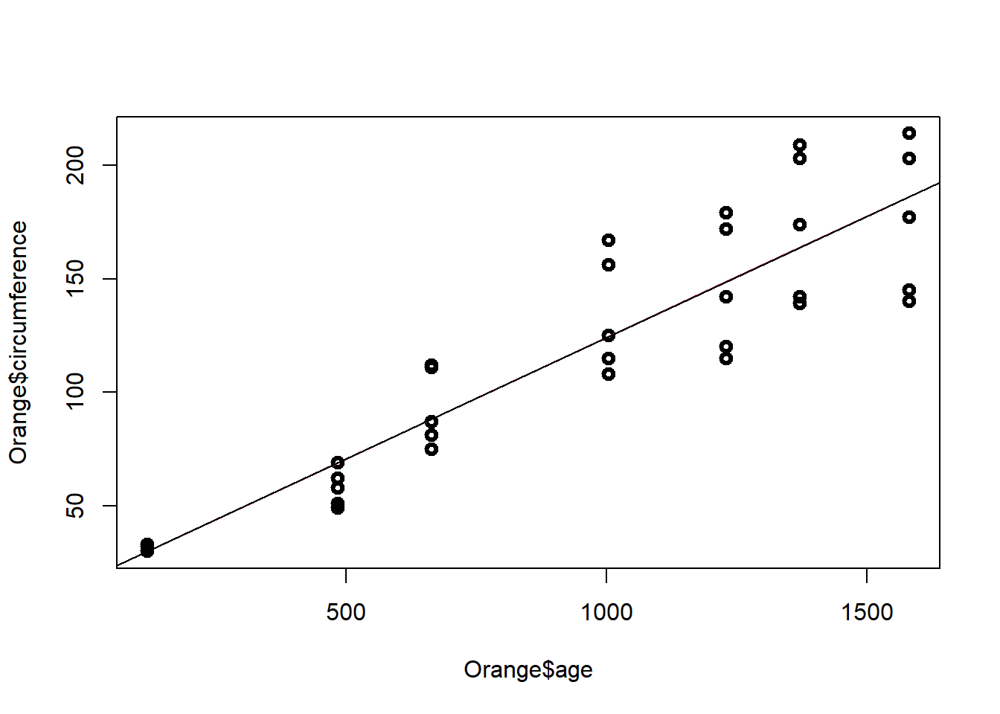
par(mfrow=c(2,2))
plot(model)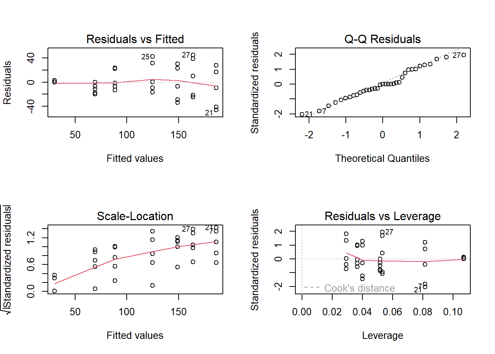
shapiro.test(residuals(model))##
## Shapiro-Wilk normality test
##
## data: residuals(model)
## W = 0.97289, p-value = 0.5273Significado de los parámetros estimados
El intercepto es la respuesta media observada en el crecimiento de los arboles.
La péndiente indica que por cada mes que pasa la circunferencia del arbol aumenta 0.1 unidades
Modelo de regresión lineal de intercepto aleatorio con la misma pendiente:
El modelo de regresión lineal con factores corresponde a
model=lm(Orange$circumference~Orange$age+as.factor(Orange$Tree))
summary(model)##
## Call:
## lm(formula = Orange$circumference ~ Orange$age + as.factor(Orange$Tree))
##
## Residuals:
## Min 1Q Median 3Q Max
## -30.505 -8.790 3.737 7.650 21.859
##
## Coefficients:
## Estimate Std. Error t value Pr(>|t|)
## (Intercept) 17.399650 5.543461 3.139 0.00388 **
## Orange$age 0.106770 0.005321 20.066 < 2e-16 ***
## as.factor(Orange$Tree).L 39.935049 5.768048 6.923 1.31e-07 ***
## as.factor(Orange$Tree).Q 2.519892 5.768048 0.437 0.66544
## as.factor(Orange$Tree).C -8.267097 5.768048 -1.433 0.16248
## as.factor(Orange$Tree)^4 -4.695541 5.768048 -0.814 0.42224
## ---
## Signif. codes: 0 '***' 0.001 '**' 0.01 '*' 0.05 '.' 0.1 ' ' 1
##
## Residual standard error: 15.26 on 29 degrees of freedom
## Multiple R-squared: 0.9399, Adjusted R-squared: 0.9295
## F-statistic: 90.7 on 5 and 29 DF, p-value: < 2.2e-16La recta general del modelo es:
\[\Large \hat y_i=17.4+0.1x_{i}+39.93arbol2_i+2.51arbol3_i-8.26arbol4_i-4.69arbol5_i\]
Las rectas ajustadas para cada árbol son:
Arbol 1:
\[\Large \hat y_i=17.4+0.1x_{i}\]
Arbol 2: \[\Large \hat y_i=57.33+0.1x_{i}\]
Arbol 3: \[\Large \hat y_i=19.92+0.1x_{i}\]
Arbol 4: \[\Large \hat y_i=9.14+0.1x_{i}\]
Arbol 5: \[\Large \hat y_i=12.71+0.1x_{i}\]
El diagrama de dispersión discriminando por los niveles de la variables factor es:
plot(Orange$age,Orange$circumference,col=Orange$Tree,lwd=3)
abline(a=17.4,b=0.1,col=1,lwd=3)
abline(a=57.33,b=0.1,col=2,lwd=3)
abline(a=19.92,b=0.1,col=3,lwd=3)
abline(a=9.14,b=0.1,col=4,lwd=3)
abline(a=12.71,b=0.1,col=5,lwd=3)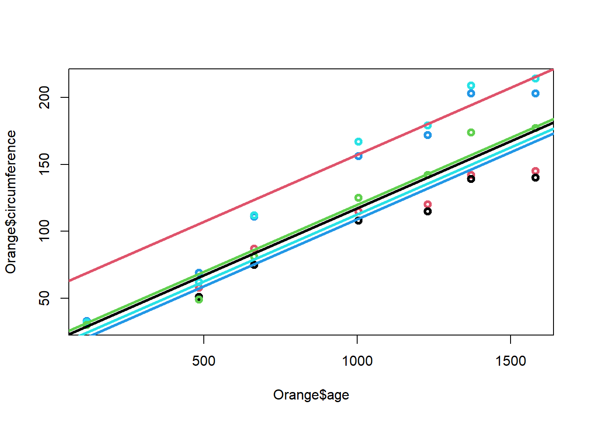
Con base en la tabla ANOVA, y bajo los supuestos de los errores, se realiza el test de significancia de la regresión el cual se enuncia de la siguiente manera:
\(H_0= \beta_1=\beta_2=...\beta_k\) El modelo de regresión no es significativo.
\(H_1=Algún\ \beta_k \not=0\) Existe una relación de regresión significativa con al menos una de las variables.
Es decir, se prueba que existe una relación de regresión, sin embargo esto no garantiza que el modelo resulte útil para hacer predicciones.
model=lm(Orange$circumference~Orange$age+as.factor(Orange$Tree))
anova(model)## Analysis of Variance Table
##
## Response: Orange$circumference
## Df Sum Sq Mean Sq F value Pr(>F)
## Orange$age 1 93772 93772 402.639 < 2.2e-16 ***
## as.factor(Orange$Tree) 4 11841 2960 12.711 4.289e-06 ***
## Residuals 29 6754 233
## ---
## Signif. codes: 0 '***' 0.001 '**' 0.01 '*' 0.05 '.' 0.1 ' ' 1Modelo de regresión lineal con pendiente e intercepto diferentes
El modelo de regresión lineal con factores corresponde a
model=lm(Orange$circumference~Orange$age*as.factor(Orange$Tree))
summary(model)##
## Call:
## lm(formula = Orange$circumference ~ Orange$age * as.factor(Orange$Tree))
##
## Residuals:
## Min 1Q Median 3Q Max
## -18.061 -6.639 -1.482 8.069 16.649
##
## Coefficients:
## Estimate Std. Error t value Pr(>|t|)
## (Intercept) 17.399650 3.782659 4.600 0.000105 ***
## Orange$age 0.106770 0.003631 29.406 < 2e-16 ***
## as.factor(Orange$Tree).L -4.303473 8.458282 -0.509 0.615362
## as.factor(Orange$Tree).Q 1.541262 8.458282 0.182 0.856880
## as.factor(Orange$Tree).C 1.387598 8.458282 0.164 0.871009
## as.factor(Orange$Tree)^4 -10.900936 8.458282 -1.289 0.209271
## Orange$age:as.factor(Orange$Tree).L 0.047974 0.008119 5.909 3.63e-06 ***
## Orange$age:as.factor(Orange$Tree).Q 0.001061 0.008119 0.131 0.897047
## Orange$age:as.factor(Orange$Tree).C -0.010470 0.008119 -1.290 0.209002
## Orange$age:as.factor(Orange$Tree)^4 0.006729 0.008119 0.829 0.415032
## ---
## Signif. codes: 0 '***' 0.001 '**' 0.01 '*' 0.05 '.' 0.1 ' ' 1
##
## Residual standard error: 10.41 on 25 degrees of freedom
## Multiple R-squared: 0.9759, Adjusted R-squared: 0.9672
## F-statistic: 112.4 on 9 and 25 DF, p-value: < 2.2e-16La recta general del modelo es:
\[\Large \hat y_i=17.4+0.1x_{i}-4.3arbol_2+1.51arbol_3+1.4arbol_4-10.9arbol_5+ 0.05arbol_2*x_i+0.001arbol_3*x_i-0.01arbol_4*x_i+0.006arbol_5*x_i\]
Las rectas ajustadas para cada árbol son:
Arbol 1:
\[\Large \hat y_i=17.4+0.1x_{i}\]
Arbol 2: \[\Large \hat y_i=13.1+0.15x_{i}\]
Arbol 3: \[\Large \hat y_i=18.9+0.101x_{i}\]
Arbol 4: \[\Large \hat y_i=18.8+0.1x_{i}\]
Arbol 5: \[\Large \hat y_i=6.5+0.106x_{i}\]
El diagrama de dispersión discriminando por los niveles de la variables factor es:
plot(Orange$age,Orange$circumference,col=Orange$Tree,lwd=3)
abline(a=17.4,b=0.1,col=1,lwd=3)
abline(a=13.1,b=0.15,col=2,lwd=3)
abline(a=18.9,b=0.1,col=3,lwd=3)
abline(a=18.8,b=0.1,col=4,lwd=3)
abline(a=6.1,b=0.1,col=5,lwd=3)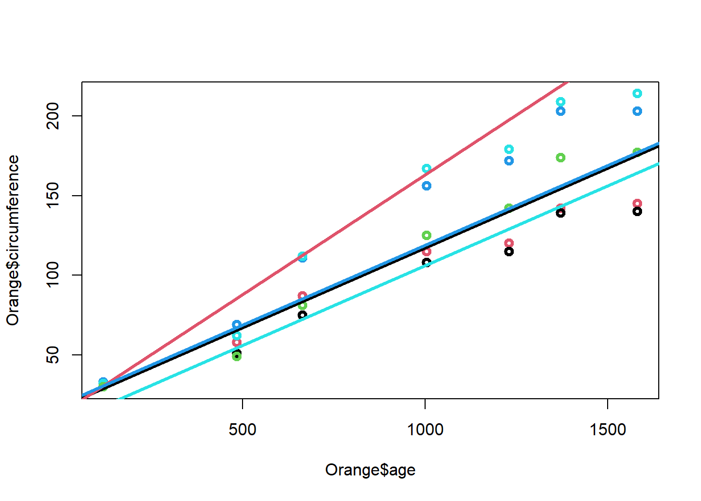
Con base en la tabla ANOVA, y bajo los supuestos de los errores, se realiza el test de significancia de la regresión el cual se enuncia de la siguiente manera:
\(H_0= \beta_1=\beta_2=...\beta_k\) El modelo de regresión no es significativo.
\(H_1=Algún\ \beta_k \not=0\) Existe una relación de regresión significativa con al menos una de las variables.
Es decir, se prueba que existe una relación de regresión, sin embargo esto no garantiza que el modelo resulte útil para hacer predicciones.
model=lm(Orange$circumference~Orange$age*as.factor(Orange$Tree))
anova(model)## Analysis of Variance Table
##
## Response: Orange$circumference
## Df Sum Sq Mean Sq F value Pr(>F)
## Orange$age 1 93772 93772 864.7348 < 2.2e-16 ***
## as.factor(Orange$Tree) 4 11841 2960 27.2983 8.428e-09 ***
## Orange$age:as.factor(Orange$Tree) 4 4043 1011 9.3206 9.402e-05 ***
## Residuals 25 2711 108
## ---
## Signif. codes: 0 '***' 0.001 '**' 0.01 '*' 0.05 '.' 0.1 ' ' 1Ejemplo 2
Modelo de pendiente e intercepto diferentes
Se tienen los datos de las ventas y publicidad invertidos en cada una de las secciones
Seccion=c(rep("A",5),rep("B",5),rep("C",5))
Publicidad=c(5.2,5.9,7.7,7.9,9.4,8.2,9,9.1,10.5,10.5,10,10.3,12.1,12.7,13.6)
Ventas=c(9,10,12,12,14,13,13,12,13,14,18,19,20,21,22)
datos=data.frame(Seccion,Publicidad,Ventas)
###GRAFICANDO VENTAS VS. PUBLICIDAD SEG´UN SECCION###
attach(datos)## The following objects are masked _by_ .GlobalEnv:
##
## Publicidad, Seccion, Ventasplot(Publicidad,Ventas,pch=1:3,col=1:3,cex=2,cex.lab=1.5)
legend("topleft",legend=c("A","B","C"),pch=c(1:3),col=c(1:3),cex=2)
#USANDO POR DEFECTO COMO SECCIÓN REFERENCIA LA A
###MODELO GENERAL: RECTAS DIFERENTES TANTO EN PENDIENTE COMO EN INTERCEPTO###
#Con interacción entre la variable publicidad y sección
modelo1=lm(Ventas~Publicidad*Seccion)
summary(modelo1)##
## Call:
## lm(formula = Ventas ~ Publicidad * Seccion)
##
## Residuals:
## Min 1Q Median 3Q Max
## -0.87683 -0.22516 0.04366 0.14985 0.64418
##
## Coefficients:
## Estimate Std. Error t value Pr(>|t|)
## (Intercept) 3.0318 1.0346 2.930 0.0167 *
## Publicidad 1.1590 0.1403 8.262 1.71e-05 ***
## SeccionB 6.7317 2.4423 2.756 0.0222 *
## SeccionC 5.2429 2.0724 2.530 0.0322 *
## Publicidad:SeccionB -0.8169 0.2718 -3.005 0.0148 *
## Publicidad:SeccionC -0.1603 0.2068 -0.775 0.4581
## ---
## Signif. codes: 0 '***' 0.001 '**' 0.01 '*' 0.05 '.' 0.1 ' ' 1
##
## Residual standard error: 0.4709 on 9 degrees of freedom
## Multiple R-squared: 0.9916, Adjusted R-squared: 0.9869
## F-statistic: 211.4 on 5 and 9 DF, p-value: 4.782e-09confint(modelo1)## 2.5 % 97.5 %
## (Intercept) 0.6913867 5.3721561
## Publicidad 0.8416690 1.4763999
## SeccionB 1.2067246 12.2566144
## SeccionC 0.5547971 9.9309735
## Publicidad:SeccionB -1.4317793 -0.2020276
## Publicidad:SeccionC -0.6280374 0.3074717anova(modelo1)## Analysis of Variance Table
##
## Response: Ventas
## Df Sum Sq Mean Sq F value Pr(>F)
## Publicidad 1 193.859 193.859 874.1066 2.829e-10 ***
## Seccion 2 38.523 19.261 86.8493 1.307e-06 ***
## Publicidad:Seccion 2 2.023 1.011 4.5601 0.04289 *
## Residuals 9 1.996 0.222
## ---
## Signif. codes: 0 '***' 0.001 '**' 0.01 '*' 0.05 '.' 0.1 ' ' 1#recta para la sección a
abline(a=3.03,b=1.16,col=1,pch=1,lwd=2)
# Recta para la sección b
abline(a=9.76,b=0.35,col=2,pch=2,lwd=2)
#Recta para la sección c
abline(a=8.27,b=1,col=3,pch=3,lwd=2)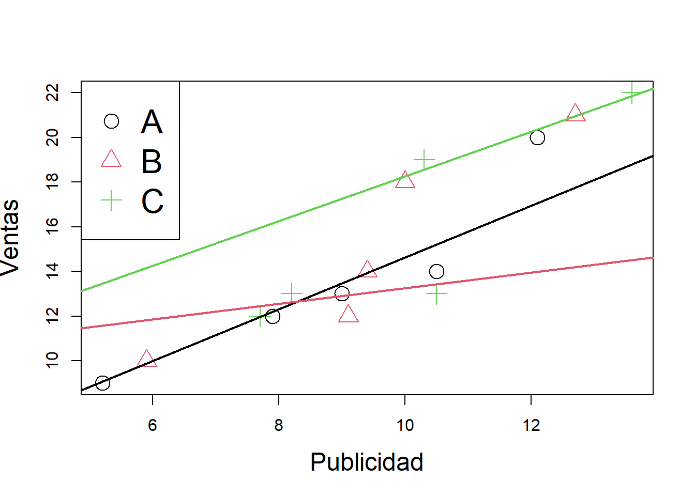
MODELO CON INTERCEPTO diferente
###MODELO CON RECTAS DIFERENTES SOLO EN EL INTERCEPTO###
modelo2=lm(Ventas~Publicidad+Seccion)
summary(modelo2)##
## Call:
## lm(formula = Ventas ~ Publicidad + Seccion)
##
## Residuals:
## Min 1Q Median 3Q Max
## -1.00202 -0.33520 -0.00202 0.29767 1.21398
##
## Coefficients:
## Estimate Std. Error t value Pr(>|t|)
## (Intercept) 4.4437 0.9142 4.861 0.000502 ***
## Publicidad 0.9635 0.1210 7.966 6.80e-06 ***
## SeccionB -0.5582 0.4686 -1.191 0.258600
## SeccionC 4.2451 0.6671 6.363 5.34e-05 ***
## ---
## Signif. codes: 0 '***' 0.001 '**' 0.01 '*' 0.05 '.' 0.1 ' ' 1
##
## Residual standard error: 0.6044 on 11 degrees of freedom
## Multiple R-squared: 0.983, Adjusted R-squared: 0.9784
## F-statistic: 212 on 3 and 11 DF, p-value: 5.186e-10anova(modelo2)## Analysis of Variance Table
##
## Response: Ventas
## Df Sum Sq Mean Sq F value Pr(>F)
## Publicidad 1 193.859 193.859 530.631 1.168e-10 ***
## Seccion 2 38.523 19.261 52.722 2.312e-06 ***
## Residuals 11 4.019 0.365
## ---
## Signif. codes: 0 '***' 0.001 '**' 0.01 '*' 0.05 '.' 0.1 ' ' 1confint(modelo2)## 2.5 % 97.5 %
## (Intercept) 2.4316194 6.4557425
## Publicidad 0.6972616 1.2296965
## SeccionB -1.5894689 0.4730825
## SeccionC 2.7767893 5.7133597plot(Publicidad,Ventas,pch=1:3,col=1:3,cex=2,cex.lab=1.5)
legend("topleft",legend=c("A","B","C"),pch=c(1:3),col=c(1:3),cex=2)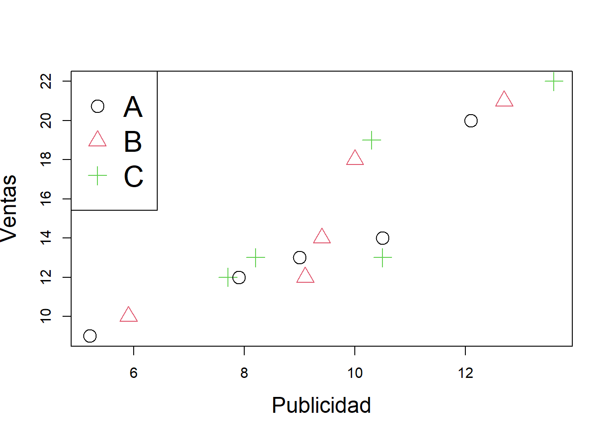
Básicamente, existen tres procedimientos de selección automática, los cuales son computacionalmente menos costosos que el procedimiento de selección basado en ajustar todas las regresiones posibles, y operan en forma secuencial:
Forward o selección hacia delante Agrega variables, una por vez, buscando reducir en forma significativa la suma de cuadrados de los errores.
Backward o selección hacia atrás El método backward, parte del modelo con todas las variables y elimina secuencialmente de a una variable, buscando reducir el SSE.
Stepwise, una combinación de los dos anteriores La variable que se elimina en cada paso, es aquella que no resulta significativa en presencia de las demás variables del modelo de regresión que se tiene en ese momento. El algoritmo se detiene cuando todas las variables que aún permanecen en el modelo son significativas en presencia de las demás.
Ejemplo
Para estimar la producción en madera de un bosque se suele realizar un muestreo previo en el que se toman una serie de mediciones no destructivas. Disponemos de mediciones para 20 árboles, así como el volumen de madera que producen una vez cortados. Las variables observadas son:
HT = altura en pies
DBH = diámetro del tronco a 4 pies de altura (en pulgadas)
D16 = diámetro del tronco a 16 pies de altura (en pulgadas)
VOL = volumen de madera obtenida (en pies cúbicos).
El objetivo del análisis es determinar cuál es la relación entre dichas medidas y el volumen de madera, con el fin de poder predecir este último en función de las primeras
DBH <- c(10.2,13.72,15.43,14.37,15,15.02,15.12,15.24,15.24,15.28, 13.78,15.67,15.67,15.98,16.5,16.87,17.26,17.28,17.87,19.13)
D16 <-c(9.3,12.1,13.3,13.4,14.2,12.8,14,13.5,14,13.8,13.6,14, 13.7,13.9,14.9,14.9,14.3,14.3,16.9,17.3)
HT <-c(89,90.07,95.08,98.03,99,91.05,105.6,100.8,94,93.09,89, 102,99,89.02,95.09,95.02,91.02,98.06,96.01,101)
VOL <-c(25.93,45.87,56.2,58.6,63.36,46.35,68.99,62.91,58.13, 59.79,56.2,66.16,62.18,57.01,65.62,65.03,66.74,73.38,82.87,95.71)
bosque<-data.frame(VOL=VOL,DBH=DBH,D16=D16,HT=HT)
plot(bosque)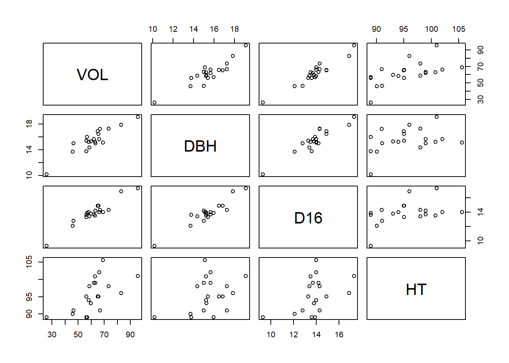
###correlaciones entre variables
#install.packages(ppcor)
library(PerformanceAnalytics)## Cargando paquete requerido: xts## Cargando paquete requerido: zoo##
## Adjuntando el paquete: 'zoo'## The following objects are masked from 'package:base':
##
## as.Date, as.Date.numeric##
## Adjuntando el paquete: 'PerformanceAnalytics'## The following object is masked from 'package:graphics':
##
## legendlibrary(ppcor)## Cargando paquete requerido: MASSpcor(bosque)## $estimate
## VOL DBH D16 HT
## VOL 1.0000000 0.3683119 0.7627127 0.7285511
## DBH 0.3683119 1.0000000 0.2686789 -0.3107753
## D16 0.7627127 0.2686789 1.0000000 -0.4513110
## HT 0.7285511 -0.3107753 -0.4513110 1.0000000
##
## $p.value
## VOL DBH D16 HT
## VOL 0.0000000000 0.1326107 0.0002324675 0.0006056469
## DBH 0.1326107400 0.0000000 0.2810102724 0.2094003059
## D16 0.0002324675 0.2810103 0.0000000000 0.0601150552
## HT 0.0006056469 0.2094003 0.0601150552 0.0000000000
##
## $statistic
## VOL DBH D16 HT
## VOL 0.000000 1.584644 4.717295 4.254366
## DBH 1.584644 0.000000 1.115742 -1.307862
## D16 4.717295 1.115742 0.000000 -2.022984
## HT 4.254366 -1.307862 -2.022984 0.000000
##
## $n
## [1] 20
##
## $gp
## [1] 2
##
## $method
## [1] "pearson"chart.Correlation(bosque, histogram = F, pch = 19)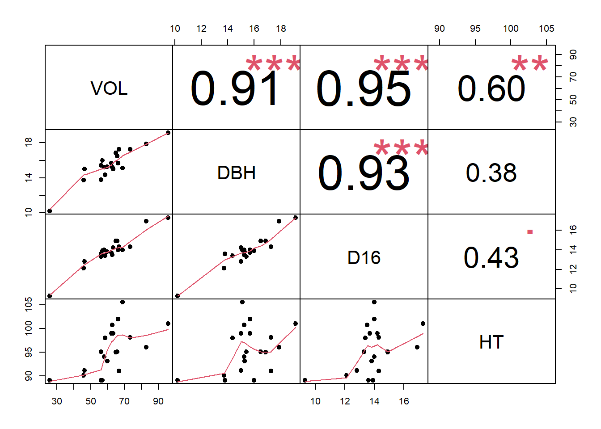
El modelo inicial ajustado corresponde a:
m1=lm(VOL~D16+HT+DBH)
summary(m1)##
## Call:
## lm(formula = VOL ~ D16 + HT + DBH)
##
## Residuals:
## Min 1Q Median 3Q Max
## -5.2548 -1.6765 -0.1277 1.5232 4.9990
##
## Coefficients:
## Estimate Std. Error t value Pr(>|t|)
## (Intercept) -108.5758 14.1422 -7.677 9.42e-07 ***
## D16 5.6714 1.2023 4.717 0.000232 ***
## HT 0.6938 0.1631 4.254 0.000606 ***
## DBH 1.6258 1.0259 1.585 0.132611
## ---
## Signif. codes: 0 '***' 0.001 '**' 0.01 '*' 0.05 '.' 0.1 ' ' 1
##
## Residual standard error: 3.095 on 16 degrees of freedom
## Multiple R-squared: 0.9591, Adjusted R-squared: 0.9514
## F-statistic: 124.9 on 3 and 16 DF, p-value: 2.587e-11anova(m1)## Analysis of Variance Table
##
## Response: VOL
## Df Sum Sq Mean Sq F value Pr(>F)
## D16 1 3401.3 3401.3 354.9987 2.396e-12 ***
## HT 1 165.7 165.7 17.2890 0.0007408 ***
## DBH 1 24.1 24.1 2.5111 0.1326107
## Residuals 16 153.3 9.6
## ---
## Signif. codes: 0 '***' 0.001 '**' 0.01 '*' 0.05 '.' 0.1 ' ' 1Al quitar la variable no significativa del modelo queda:
m1=lm(VOL~D16+HT)
summary(m1)##
## Call:
## lm(formula = VOL ~ D16 + HT)
##
## Residuals:
## Min 1Q Median 3Q Max
## -4.2309 -1.8386 -0.4012 1.0922 6.9373
##
## Coefficients:
## Estimate Std. Error t value Pr(>|t|)
## (Intercept) -105.9027 14.6520 -7.228 1.41e-06 ***
## D16 7.4128 0.5088 14.568 4.92e-11 ***
## HT 0.6765 0.1698 3.985 0.000959 ***
## ---
## Signif. codes: 0 '***' 0.001 '**' 0.01 '*' 0.05 '.' 0.1 ' ' 1
##
## Residual standard error: 3.23 on 17 degrees of freedom
## Multiple R-squared: 0.9526, Adjusted R-squared: 0.9471
## F-statistic: 170.9 on 2 and 17 DF, p-value: 5.515e-12par(mfrow=c(2,2))
plot(m1)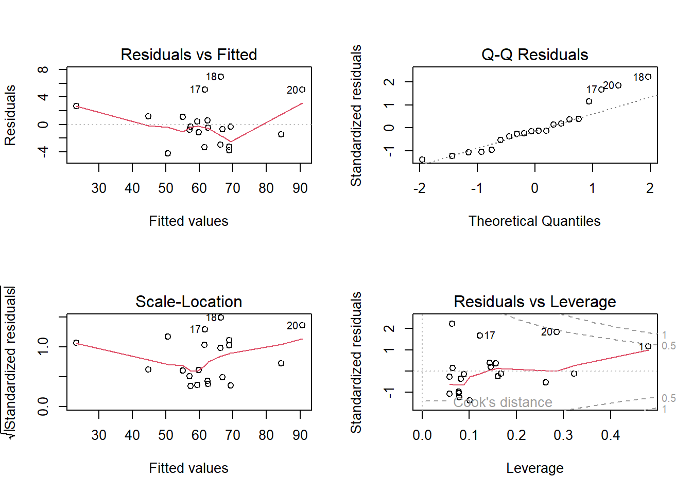
El modelo ajustado corresponde a:
\[\hat y=-105.9027+7.41D16+0.67HT\]
Al evaluar la significancia de los parámetros del modelo se tiene:
library(car)## Cargando paquete requerido: carData#library(rgl)
library(perturbR)
library(leaps)
library(scatterplot3d)
anova(m1)## Analysis of Variance Table
##
## Response: VOL
## Df Sum Sq Mean Sq F value Pr(>F)
## D16 1 3401.3 3401.3 326.019 1.58e-12 ***
## HT 1 165.7 165.7 15.878 0.0009585 ***
## Residuals 17 177.4 10.4
## ---
## Signif. codes: 0 '***' 0.001 '**' 0.01 '*' 0.05 '.' 0.1 ' ' 1##se hace uso de la siguiente función creada para estimar el aporte de los coeficientes estandarizados
miscoeficientes=function(modeloreg,datosreg){
coefi=coef(modeloreg)
datos2=as.data.frame(scale(datosreg))
coef.std=c(0,coef(lm(update(formula(modeloreg),~.+0),datos2)))
limites=confint(modeloreg,level=0.95)
vifs=c(0,vif(modeloreg))
resul=data.frame(Estimacin=coefi,Limites=limites,Vif=vifs,Coef.Std=coef.std)
cat("Coeficientes estimados, sus I.C, Vifs y Coeficientes estimados estandarizados","\n")
resul
}
m1=lm(VOL~D16+HT+DBH)
summary(m1)##
## Call:
## lm(formula = VOL ~ D16 + HT + DBH)
##
## Residuals:
## Min 1Q Median 3Q Max
## -5.2548 -1.6765 -0.1277 1.5232 4.9990
##
## Coefficients:
## Estimate Std. Error t value Pr(>|t|)
## (Intercept) -108.5758 14.1422 -7.677 9.42e-07 ***
## D16 5.6714 1.2023 4.717 0.000232 ***
## HT 0.6938 0.1631 4.254 0.000606 ***
## DBH 1.6258 1.0259 1.585 0.132611
## ---
## Signif. codes: 0 '***' 0.001 '**' 0.01 '*' 0.05 '.' 0.1 ' ' 1
##
## Residual standard error: 3.095 on 16 degrees of freedom
## Multiple R-squared: 0.9591, Adjusted R-squared: 0.9514
## F-statistic: 124.9 on 3 and 16 DF, p-value: 2.587e-11miscoeficientes(m1,bosque)## Coeficientes estimados, sus I.C, Vifs y Coeficientes estimados estandarizados## Estimacin Limites.2.5.. Limites.97.5.. Vif Coef.Std
## (Intercept) -108.5758465 -138.5559230 -78.595770 0.000000 0.0000000
## D16 5.6713954 3.1227268 8.220064 7.470209 0.6522030
## HT 0.6937702 0.3480719 1.039469 1.234397 0.2391034
## DBH 1.6257654 -0.5491507 3.800682 7.087104 0.2133976Examinando los valores en la columna “Standarized Estimate”, vemos que aparentemente, D16 tiene mayor peso (en términos absolutos) sobre el volumen de madera en función de las variables estandarizadas: el promedio del volumen de madera estandarizado aumenta en 0.65 unidades al aumentar una unidad el diametro a los 16 pies de altura, al mantener fijo los resultados de las otras tres pruebas. La segunda variable con mayor peso es la altura HT. La altura a 4 pies de altura no tiene efecto significativo sobre el volumen de madera.
La predicción en regresión lineal consiste en usar la ecuación estimada del modelo para pronosticar nuevos valores de la variable respuesta a partir de valores conocidos de las variables explicativas.
Para el desarrollo del concepto de predicción y sus intervalos de confianza en regresión lineal es importante tener claro la diferencia entre dos conceptos diferentes como lo son la respuesta media y los valores predictivos.
La RM estima el valor promedio de Y para todos los individuos que tienen un mismo valor de X, matemáticamente:
\[E(Y∣X=x_0)= β_0+β_1x\]
E(Y∣X=x) se lee como: “el valor esperado (o promedio) de Y dado que X=x”.
Ejemplo
Sea:
X = horas de estudio
Y = nota obtenida
Modelo: \[\hat Y=2+0.5X\]
Si X=6 entonces \(\hat y=5\)
Interpretación:
El promedio de las notas de todos los estudiantes que estudian 6 horas es aproximadamente 5.
IC para la respuesta media o IC de la regresión
Este intervalo estima la media verdadera de la variable respuesta sobre la recta de regresión, se refieren a la línea de las medias y no a la población globalmente.
Se estima mediante
\[\hat Y_0 \pm t_{\alpha/2,n-p}S\sqrt {\frac{1}{n}+\left(\frac{(x_0-\bar x )^2}{\sum (x_i-\bar x)}^2\right) }\] Donde
| Termino | significado |
|---|---|
| \(\hat Y_0\) | Respuesta media estimada |
| \(t_{\alpha/2,n-p}\) | Valor critico de la distribución t |
| p | número de parámetros |
| s | error estándar |
| n | Tamaño muestral |
| \(\bar x\) | Promedio de x |
| \(x_0\) | valor donde se quiero estimar la media |
El VP estima el valor que podría obtener un individuo específico futuro. Aquí sí entra la variabilidad individual.
Ejemplo
Muchos estudiantes estudian 6 horas, aunque el promedio sea 5
algunos podrían sacar:
3.5
4
6
7
IC para la predicción de nuevas observaciones
En regresión lineal simple, Si \(\hat Y_o\) es el valor estimado para la variable respuesta cuando \(X=X_o\), entonces un IC del \((1-\alpha/2)*100\) para \(Y_o\) está dado por:
\[\hat Y_o\pm t_{\alpha/2,n-p}\sqrt {MSR\left(1+\frac{1}{n}+\frac{(x_0-\bar x )^2}{\sum (x_i-\bar x)}^2\right) }\]
Comparación de los IC para la respuesta media y para la predicción
IC para respuesta media
Es más estrecho porque solo estima el promedio poblacional.:
\[IC(E(Y∣X))\]
IC para la predicción
Más ancho porque incluye la incertidumbre del modelo y la variabilidad individual.
\[IP(Y_{nuevo})\]
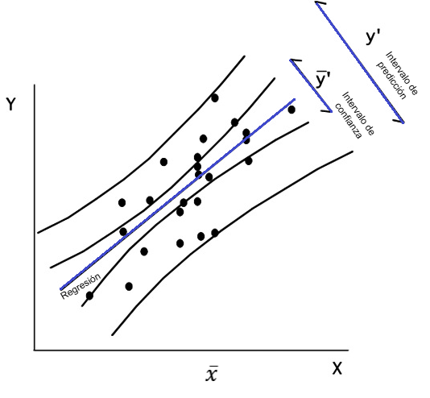
Ambos intervalos crecen en la medida que se alejan de la media de X lo que refleja que las predicciones son menos confiables en los extremos pues se basan en menos datos.
Comparación resumida
| Descripción | Respuesta media | Valor predictivo |
|---|---|---|
| Diferencia intuitiva | ¿Cuál es el promedio esperado? | ¿Qué podría sacar un estudiante particular? |
| Qué estima | Promedio poblacional | Observación individual |
| Notación | \(E(Y∣X)\) | \(Y_{nuevo}\) |
| Variabilidad individual | No | Sí |
| Intervalo | Más estrecho | Más ancho |
| Interpretación | Media esperada | Valor futuro posible |
| Idea clave | Comportamiento promedio. | pronóstico para un individuo específico. |
| Idea clave 2 | Representa el centro del grupo | intenta estimar un caso individual |
IC para los parámetros del modelo \(\beta_i\)
En regresión lineal, los intervalos de confianza para el intercepto y la pendiente permiten estimar el rango donde probablemente se encuentran los verdaderos parámetros poblacionales:
IC para la pendiente
La pendiente mide cuánto cambia Y cuando X aumenta una unidad.
El intervalo es:
\[\hat β±t_{α/2,n−2}SE(\hat β_1)\]
Interpretación
\[IC(β_1)=(0.30,0.70)\]
Con 95% de confianza, por cada unidad que aumenta X, el valor promedio de Y aumenta entre 0.30 y 0.70 unidades.
IC para el intercepto
El intercepto representa el valor esperado de Y cuando X=0, el intervalo es:
\[\hat β_0 ± t_{α/2,n−2} SE(\hat β_0)\]
Interpretación
\[ IC(β_0)=(1.2,3.8)\]
Con 95% de confianza, el valor promedio de Y cuando X=0 está entre 1.2 y 3.8.
Relación con pruebas de hipótesis
Estos intervalos permiten verificar hipótesis.
Por ejemplo:
Para la pendiente
\[H_0:β_1=0\]
Si el intervalo:
contiene 0 → la pendiente podría no ser significativa. no contiene 0 → la pendiente es significativa.
En el ejemplo:
(0.294,0.706)
no contiene 0, entonces la pendiente es estadísticamente significativa.
VER (https://fhernanb.github.io/libro_regresion/predict.html#predict)
IC para el error estándar de la regresión
El error estándar mide la variabilidad o precisión de una estimación, específicamente cuánto varían las estimaciones de la pendiente de la muestra con respecto a la verdadera pendiente de la población.
Ejemplo Para estimar la producción en madera de un bosque se suele realizar un muestreo previo en el que se toman una serie de mediciones no destructivas. Disponemos de mediciones para 20 árboles, así como el volumen de madera que producen una vez cortados. Las variables observadas son:
HT = altura en pies
DBH = diámetro del tronco a 4 pies de altura (en pulgadas)
D16 = diámetro del tronco a 16 pies de altura (en pulgadas)
VOL = volumen de madera obtenida (en pies cúbicos).
El objetivo del análisis es determinar cuál es la relación entre dichas medidas y el volumen de madera, con el fin de poder predecir este último en función de las primeras
DBH <- c(10.2,13.72,15.43,14.37,15,15.02,15.12,15.24,15.24,15.28, 13.78,15.67,15.67,15.98,16.5,16.87,17.26,17.28,17.87,19.13)
D16 <-c(9.3,12.1,13.3,13.4,14.2,12.8,14,13.5,14,13.8,13.6,14, 13.7,13.9,14.9,14.9,14.3,14.3,16.9,17.3)
HT <-c(89,90.07,95.08,98.03,99,91.05,105.6,100.8,94,93.09,89, 102,99,89.02,95.09,95.02,91.02,98.06,96.01,101)
VOL <-c(25.93,45.87,56.2,58.6,63.36,46.35,68.99,62.91,58.13, 59.79,56.2,66.16,62.18,57.01,65.62,65.03,66.74,73.38,82.87,95.71)
bosque<-data.frame(VOL=VOL,DBH=DBH,D16=D16,HT=HT)
## modelo completo
full.model <- lm(VOL~., data=bosque)
summary(full.model)##
## Call:
## lm(formula = VOL ~ ., data = bosque)
##
## Residuals:
## Min 1Q Median 3Q Max
## -5.2548 -1.6765 -0.1277 1.5232 4.9990
##
## Coefficients:
## Estimate Std. Error t value Pr(>|t|)
## (Intercept) -108.5758 14.1422 -7.677 9.42e-07 ***
## DBH 1.6258 1.0259 1.585 0.132611
## D16 5.6714 1.2023 4.717 0.000232 ***
## HT 0.6938 0.1631 4.254 0.000606 ***
## ---
## Signif. codes: 0 '***' 0.001 '**' 0.01 '*' 0.05 '.' 0.1 ' ' 1
##
## Residual standard error: 3.095 on 16 degrees of freedom
## Multiple R-squared: 0.9591, Adjusted R-squared: 0.9514
## F-statistic: 124.9 on 3 and 16 DF, p-value: 2.587e-11## busqueda de modelo optimo
library(MASS) # Para poder usar la funcion stepAIC
modback <- stepAIC(full.model, trace=TRUE, direction="backward")## Start: AIC=48.73
## VOL ~ DBH + D16 + HT
##
## Df Sum of Sq RSS AIC
## <none> 153.30 48.733
## - DBH 1 24.06 177.36 49.649
## - HT 1 173.42 326.72 61.867
## - D16 1 213.21 366.51 64.166modback$anova## Stepwise Model Path
## Analysis of Deviance Table
##
## Initial Model:
## VOL ~ DBH + D16 + HT
##
## Final Model:
## VOL ~ DBH + D16 + HT
##
##
## Step Df Deviance Resid. Df Resid. Dev AIC
## 1 16 153.3007 48.73338## modelo reducido
redu <- lm(VOL~D16,data=bosque)
summary(redu)##
## Call:
## lm(formula = VOL ~ D16, data = bosque)
##
## Residuals:
## Min 1Q Median 3Q Max
## -6.3019 -3.9308 -0.7454 2.6049 8.2962
##
## Coefficients:
## Estimate Std. Error t value Pr(>|t|)
## (Intercept) -53.4330 8.6841 -6.153 8.25e-06 ***
## D16 8.2879 0.6203 13.360 8.80e-11 ***
## ---
## Signif. codes: 0 '***' 0.001 '**' 0.01 '*' 0.05 '.' 0.1 ' ' 1
##
## Residual standard error: 4.365 on 18 degrees of freedom
## Multiple R-squared: 0.9084, Adjusted R-squared: 0.9033
## F-statistic: 178.5 on 1 and 18 DF, p-value: 8.797e-11future_y <- predict(object=redu, interval="prediction", level=0.95)## Warning in predict.lm(object = redu, interval = "prediction", level = 0.95): predictions on current data refer to _future_ responsesnuevos_datos <- cbind(VOL, future_y)
library(ggplot2)
ggplot(nuevos_datos, aes(x=D16,y=VOL))+
geom_point() +
geom_line(aes(y=lwr), color="red", linetype="dashed") +
geom_line(aes(y=upr), color="red", linetype="dashed") +
geom_smooth(method=lm, formula=y~x, se=TRUE, level=0.95, col='blue', fill='pink2') +
theme_light()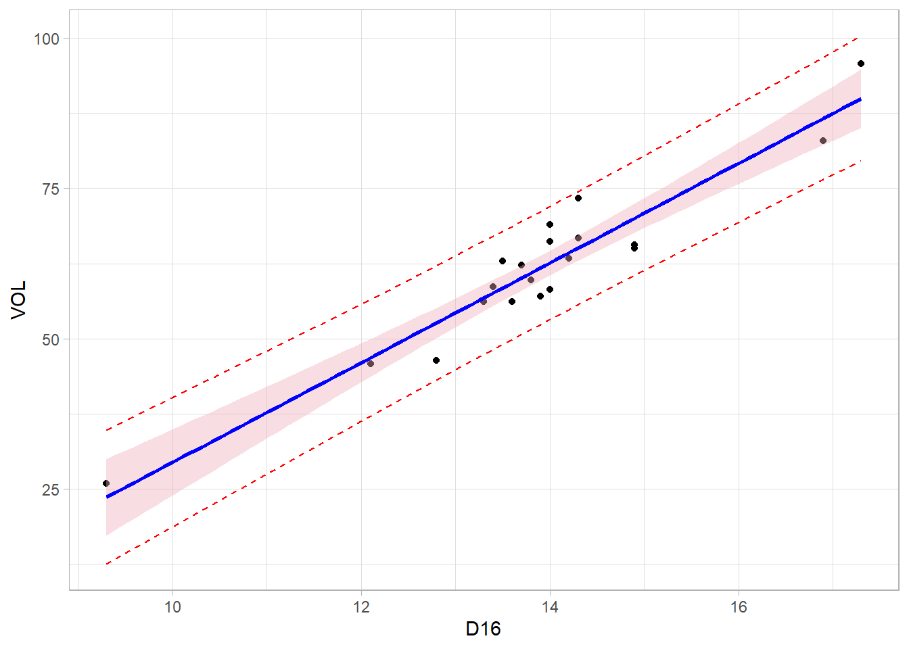
Regresión lowess
Regresión loess
Ocurre cuando dos o más variables explicativas están fuertemente correlacionadas entre sí, es decir, algunos predictores contienen información muy parecida o redundante.
En un modelo como:
\[\large Y_i=\beta_0+\beta_1X_{i1}+\beta_2X_{i2}+\beta_3X_{i3}+\varepsilon_i\]
Existe multicolinealidad si \(X_1\) y \(X_2\) están altamente correlacionadas.
Ejemplo
Supónga un modelo para predecir salario usando años de experiencia y edad. Estas variables suelen estar muy relacionadas, ya que personas mayores suelen tener más experiencia.
Entonces el modelo tiene dificultad para separar cuánto efecto pertenece a la edad, y cuánto a la experiencia.
| Consecuencias de la multicolinealidad | Descripción |
|---|---|
| Coeficientes inestables | Pequeños cambios en los datos producen grandes cambios en las estimaciones de los parámetros \(β_i\) |
| Errores estándar grandes | Los coeficientes se vuelven menos precisos. |
| IC amplios | Mayor incertidumbre sobre los parámetros. |
| Variables no significativas | Puede ocurrir que el modelo global sea significativo,pero variables individuales no lo sean |
| Signos incoherentes | A veces aparecen coeficientes positivos cuando deberían ser negativos, o viceversa. |
Cómo detectarla
1. Matriz de correlaciones
Si: ∣r∣>0.8 puede existir multicolinealidad fuerte.
2. Factor de Inflación de la Varianza (VIF)
El VIF mide cuánto aumenta la varianza del coeficiente debido a la correlación entre predictores.
Se calcula como:
\[VIF_j=\frac{1}{1-R^2_j}\]
Donde:
Interpretación del VIF
| VIF | Interpretación |
|---|---|
| 1 | Sin multicolinealidad |
| 1–5 | Moderada |
| >5 | Alta |
| >10 | Muy problemática |
Cómo solucionarla 1. Eliminar variables redundantes
Quitar predictores muy correlacionados.
Considere el MRLM
\[\large Y_i=\beta_0+\beta_1X_{i1}+\beta_2X_{i2}+...+\beta_kX_{ik}+\varepsilon_i\]
Si las variables explicatorias no están en una misma escala de medida, no podemos determinar cuál tiene mayor o menor efecto parcial sobre la respuesta promedio, en presencia de las demás, esto es, la magnitud de \(\beta_j\) refleja las unidades de la variable \(X_j\).
Cuando las variables tienen:
- unidades distintas,
- Escalas muy diferentes,los coeficientes originales no son comparables.
ejemplo
| Variable | Unidad |
|---|---|
| Ingreso | dólares |
| Edad | años |
| Temperatura | °C |
Para hacer comparaciones en forma directa de los coeficientes de regresión se recurre al uso de variables escalonadas, tanto la respuesta como las explicatorias.
Con variables estandarizadas todos los predictores quedan en la misma escala, entonces coeficientes más grandes indican mayor influencia relativa.
Escalonamiento normal unitario
Cada variable es escalonada restando su media muestral y dividiendo esta diferencia por la desviación estándar muestral de la variable, es decir:
\[\large Y_i^*=\frac{Y_i-\bar Y}{\sum_{i=1}^n (Y_i-\bar Y)^2/(n-1)} \]
\[\large X_i^*=\frac{X_i-\bar X}{\sum_{i=1}^n (X_i-\bar X)^2/(n-1)} \]
De modo que las nuevas variables tienen media cero y desviación estándar 1, lo que permite ajustar un modelo de regresión sin intercepto,
\[\large Y_i^*=\beta_1X_{i1}^*+\beta_2X_{i2}^*+...+\beta_kX_{ik}^*+\varepsilon_i \]
El intercepto suele ser aproximadamente 0 ó de tener algún valor no aporta mucha información, sobre la variable respuesta.
Los coeficientes de regresión estandarizados \(\beta_j^*\) pueden ser comparados directamente teniendo en cuenta que siguen siendo coeficientes de regresión parcial, es decir, mide el efecto de \(X_J\) dado que las demás variables explicatorias están en el modelo, además, los \(\beta_j\) pueden servir para determinar la importancia relativa de \(X_j\) en presencia de las demás variables, en la muestra o conjunto de datos particular considerado para el ajuste.
Ejemplo
Sea:
Y=rendimiento académico
y otras variables como
- Horas de estudio
- Ingreso familiar
- asistencia.Al estandarizar, todas quedan comparables, puedes identificar cuál tiene mayor efecto relativo. Idea clave
Un modelo sin intercepto, con variables explicativas estandarizadas, se usa principalmente para comparar la importancia relativa de los predictores y facilitar la interpretación de los coeficientes en una escala común.
Ejemplo
datos <- read.csv(sep = ";",dec=".",
"https://raw.githubusercontent.com/estadisticaITM/estadisticaITM.github.io/master/ejm.csv",
header = TRUE
)
head(datos)## age gender daily_social_media_hours platform_usage sleep_hours
## 1 14 male 7.9 Instagram 7.4
## 2 19 female 1.9 TikTok 8.0
## 3 17 female 1.3 Instagram 7.6
## 4 15 male 7.4 TikTok 6.9
## 5 15 female 4.7 Both 4.9
## 6 19 female 7.4 Both 4.4
## screen_time_before_sleep academic_performance physical_activity
## 1 2.9 3.01 1.5
## 2 2.9 3.22 0.8
## 3 0.5 3.92 0.0
## 4 1.6 3.48 0.8
## 5 3.0 2.37 1.4
## 6 2.4 2.63 0.6
## social_interaction_level stress_level anxiety_level addiction_level
## 1 low 2 2 1
## 2 high 8 1 10
## 3 high 2 4 2
## 4 medium 1 7 9
## 5 medium 3 5 2
## 6 high 3 5 7
## depression_label
## 1 0
## 2 0
## 3 0
## 4 0
## 5 0
## 6 0